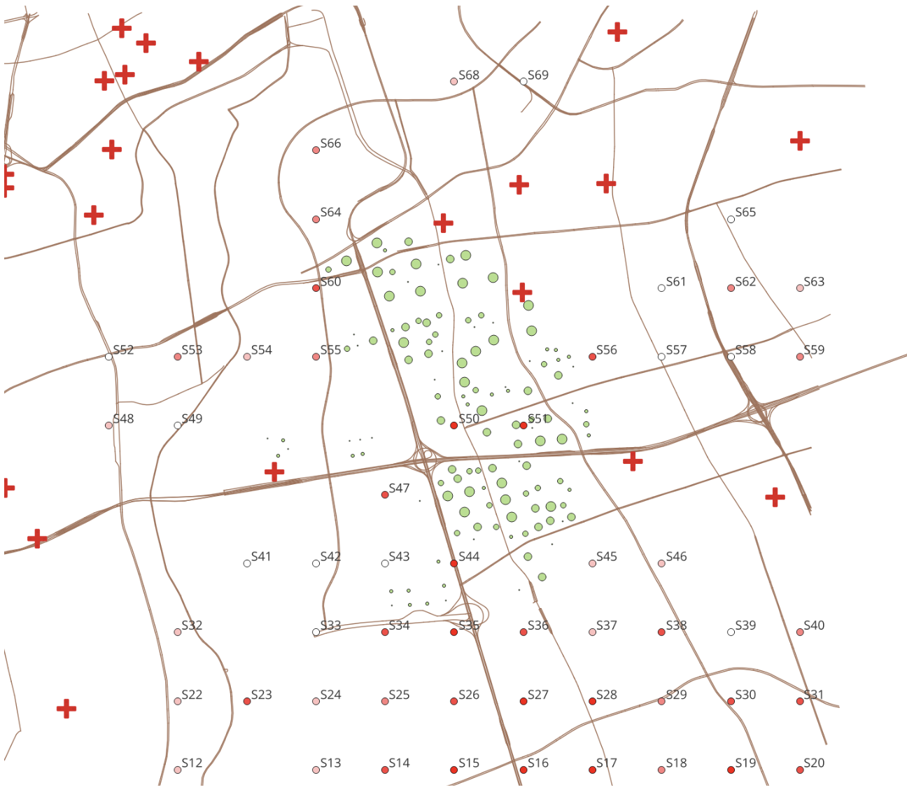
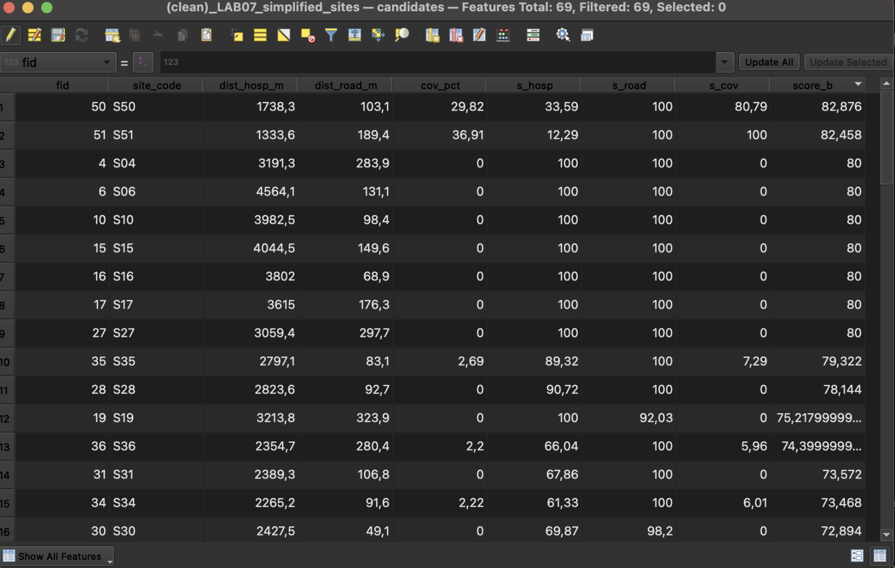

Lab 07 · November 2026
Siting a New Hospital
The question
How does changing the weights assigned to nearby homes, road access, and distance from existing hospitals affect which candidate site is ranked best for a new hospital?
The data
The analysis uses OpenStreetMap hospitals and roads (© OpenStreetMap contributors), residential compounds with floor area used as a measure of demand, and 69 candidate sites created using a rule that excludes locations within 1,100 m of an existing hospital.
The method
I used a weighted overlay to combine three 0–100 criteria: distance from existing hospitals, access to main roads, and nearby residential coverage. I compared a coverage-first weighting with an access-first weighting and then tested what happened when the raw coverage percentage was used instead of the rescaled coverage score.
The map
The first figure shows the candidate sites ranked using the coverage-first score. The second figure shows the attribute table sorted by the access-first score.
Figure 1 · Candidate sites ranked by score_a

Figure 2 · Candidate sites ranked by score_b

score_b using
weights 0.2 / 0.6 / 0.2
(hospital / road / coverage). Under this weighting, S50 becomes
the highest-ranked site.
What I found
| Question | Answer |
|---|---|
| Q1 | 17 of the 69 candidate sites have at least some homes within 1 km. |
| Q2 |
The two highest-ranked sites under score_a are
S51 (73.69) and
S50 (70.47).
|
| Q3 |
Under score_b, the top two sites are
S50 (82.88) and
S51 (82.46). Yes, the winner changed:
S51 was first under score_a, but S50 became first
when road access received the largest weight.
|
| Q4 |
Seven sites are tied for first place with a
score_raw of 50.00. All seven
have no homes within 1 km, meaning
cov_pct = 0. Using the raw coverage percentage
makes residential coverage much less influential than the
other criteria.
|
| Q5 | S51 was selected in every simulated-annealing run. S44 and S60 each appeared in four runs. The worst run had an average distance of 987.1 m, compared with 838.3 m for the best run, so the worst run was about 17.8% (approximately 18%) worse than the best. |
The ranking changed when the weights changed: prioritising nearby residential demand selected S51, while giving more importance to road access moved S50 into first place. The raw-coverage experiment also showed that rescaling a criterion can influence the result as much as the weights themselves.
What this does not show
The ranking does not identify an objectively best hospital site because the result depends on choices made before and during the analysis, including the 1,100 m candidate rule, how residential demand is represented, how each criterion is rescaled, and which weights are used.
The five-hospital experiment also uses a heuristic rather than checking every possible combination, so different random seeds can produce different solutions and the true optimal set is not known.
Reflection
The reflection for this lab is submitted separately on Brightspace.
AI disclosure
I used ChatGPT to clarify the QGIS steps, interpret the weighted-overlay results, and review my HTML code. I checked the numerical results against my QGIS attribute tables and the Lab 7 instructions.
← Back to all labs